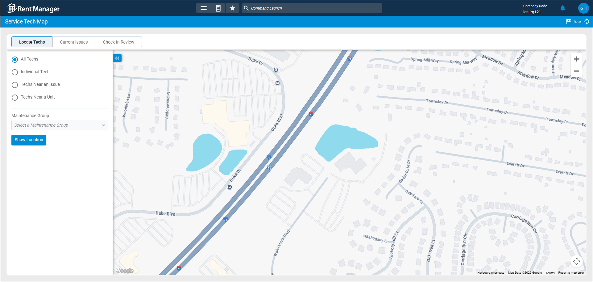
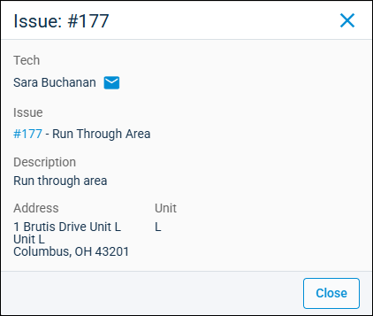

Source: https://rmxhelp.rentmanager.com/Topics/Express/Other/Service-Tech-Map.htm
Service Tech Map
The Service Tech Map allows you to track the physical location of your service technicians while they are working on issues in the field. When a technician checks in to an issue in rmAppSuite Pro, location data is sent to Rent Manager and a pin with the technician's initials displays on the map based on their GPS location. You can use the service tech map to verify that technicians are in the correct location, get an overview of the active issues in a certain region, monitor how long a technician has been checked into an issue, and view issue information directly from the page.
Related Preferences
To use this feature, you must purchase the Inspection and Service licensed features for rmAppSuite Pro. For more information, contact your sales representative at sales@rentmanager.com.
Once the features are purchased, they must be enabled in system preferences. For more information, refer to rmAppSuite Service (System Preferences).
Related Privileges
| Group | Privilege | Column |
|---|---|---|
| Service Manager | Issues | View |
For more information, refer to Control User Access.
Step 1: Filter the Map
The service tech map can be filtered based on three separate tabs. Each tab is explained in the headers below. To get started, go to  arrow_forward Services arrow_forward Service Manager arrow_forward Service Tech Map.
arrow_forward Services arrow_forward Service Manager arrow_forward Service Tech Map.

Locate Techs
The following options are available for locating techs on the service map. Each option is explained below.
All Techs
When selected, users can ping all active techs. An active tech is any user who is assigned as a maintenance tech and has the On Duty option toggled to ON in rmAppSuite Pro. In the Maintenance Group drop-down, select the maintenance group who's active techs you wish to view.
Related Preferences
To give users the ability to check in to issues they are working on, Allow techs to be located while On Duty must be enabled in system preferences. For more information, refer to rmAppSuite Service (System Preferences).
Individual Tech
In the Maintenance Group drop-down, select the maintenance group who's active techs you wish to locate. Then, to view specific active maintenance techs in the group, select them from the Tech drop-down. Off duty techs cannot be selected.
Techs Near an Issue
When enabled, users can filter the service tech map for active techs based on their proximity to a unit-specific issue. The following options are available.
| Option | Description | |||||
|---|---|---|---|---|---|---|
|
Issue Filter Options |
The following options can be used to filter issues. |
|||||
|
||||||
|
Issue |
The name of the service issue. |
|||||
|
Techs Within X Miles |
The maximum acceptable distance, in miles, between the tech's location and the location of the issue. |
Techs Near a Unit
When enabled, users can filter the service tech map for active techs based on their proximity to a unit. The following options are available.
| Option | Description |
|---|---|
|
Unit Filter Options |
The Property to filter which units display. More Information This field populates only with the properties to which you have access. Your access to properties can be managed from your user account or on the property's details page. For more information, refer to Limit Access to a Property. |
|
Unit |
The name of the unit linked to the issue. |
|
Techs Within X Miles |
The maximum acceptable distance, in miles, between the tech's location and the location of the unit. |
Current Issues
This tab allows you to filter the service tech map by Tech and what issues are currently assigned to them. Each issue that is linked to the selected tech displays on the map and can be clicked on for more information. The following filter options are available.
| Field | Descriptions |
|---|---|
|
Include issues closed today |
View only issues closed by the service tech today. |
|
Include issues not scheduled today |
View only issues that are assigned to the tech but the Scheduled date on the issue is not today. |
Check-In Review
This tab allows you to view the check-in and check-out locations for selected Tech in comparison to where the issue is located. This provides a way to see if the tech's check-in or check-out location is further away than the distance your property management company expects. For example, you may allow techs to check-in to an issue once they're 100 feet from the unit. You can use this tab to see if the check-in location occurred within that distance range from the unit.
Use the following information to filter the service tech map.
| Field | Description | |||||
|---|---|---|---|---|---|---|
|
Date Range |
The From and To date to filter issues on the service tech map. |
|||||
|
Distance Threshold |
The maximum acceptable distance, in feet, between the unit's location and the tech's check-in/check-out location. |
|||||
|
Show |
The following filter options determine what tech times load into the map. |
|||||
|
Step 2: Location Pins and Issue Information
A location pin is added to the service tech map when a service tech is set as On Duty in rmAppSuite Pro, has checked into an issue, and meets the filter criteria on the map. You can click a pin to open a pop-up that provides basic information about the issue at that location.

The information available or actions that can be taken in the pin may vary based on the tab and filter being used. The following information commonly displays.
| Field | Description |
|---|---|
|
Tech |
The name of the user assigned to the issue. |
|
Issue |
The system-generated number and name assigned of the issue assigned to the tech. |
|
Description |
The Description entered on the issue's details page. |
|
Address |
The full address of the unit where the issue is located. |
|
Unit |
The Name of the unit linked to the issue. |
|
Open Issues |
The system-generated number and name of the open issue linked to the unit. This information only displays when Techs Near a Unit is selected on the Locate Techs tab. |
|
Previous Issues |
The system-generated number and name of the previously opened issues linked to the unit. This information only displays when Techs Near an Issue is selected on the Locate Techs tab. |